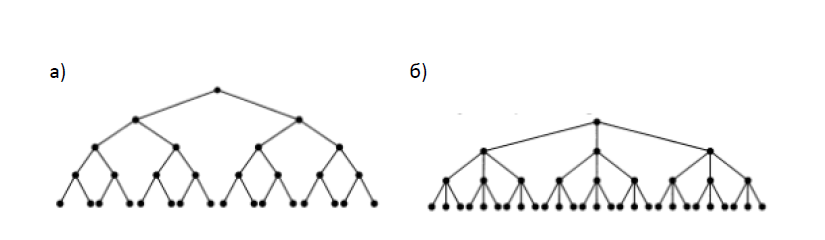

Вежба 1. Кои од следниве графови се дрва? (Задача 2 од книга!)
Решение
Дрва се графовите под а), b), d) и f). Графот под c) не е дрво бидејќи не е сврзан, а графот под e) содржи прости циклуси.
Вежба 2. Одговори ги следниве прашања во врска со кореновото дрво
претставено
на цртежот. (Задача 4 од книга)
Решение
Корен е темето `а`.
Решение
Внатрешни темиња се: `a`, `b`, `d`, `e`, `g`, `h`, `i` и `o`;
Решение
Листови се: `c`, `f`, `j`, `k`, `l`, `m`, `n`, `p`, `q`, `r` и `s`;
Решение
Темето j нема деца (тоа е лист);
Решение
Родител на темето `h` е темето `d`;
Решение
Единствено сестринско теме на темето `o` е `p` ;
Решение
Претци на темето m се темињата `g`, `b` и `a`;
Решение
Потомци на темето `b` се темињата `e`, `f`, `g`, `j`, `k`, `l` и `m`.
Вежба 3. Дали кореновото дрво од претходната задача е целосно `m`-арно
дрво, за некој
позитивен цел број `m`? (Задача 6 од книга)
За дрвото да е целосно `m`-арно, потребно е секое внатрешно теме да има точно
`m`
деца. Тоа не е исполнето, бидејќи, на пример, темињата `g` и `b` имаат различен
број
на деца. Значи, ова дрво не може да биде целосно `m`-арно дрво.
Решение
Вежба 4. Кое е нивото на секое теме од кореновото дрво од Задача 2? Која е
висината
на дрвото? (Задача 8 од книга)
Нивото на коренот a е `0`; нивото на темињата `b`, `c` и `d` е `1`; нивото на
темињата `e`, `f`, `g`,
`h` и `i` е `2`; нивото на темињата `j, k, l, m, n, o` и `p` е 3; и нивото на
темињата `q`, `r` и `s` е 4.
Висината на дрвото е `4`.
Решение
Вежба 5. Нацртај го поддрвото на кореновото дрво од Задача 2, со корен:
a) `a`; б) `c`; в) `e`; (Задача 10 од книга)
Решение
Вежба 6. Ова е пример 7 во предавањато.
Вежба 8. Колку ребра има дрво со 10 000 јазли? Согласно Теорема 2, дрво со `n = 10 000` темиња има `n – 1 = 10 000 – 1 = 9 999`
ребра.
Решение
Вежба 9. а) Колку неизоморфни некоренови дрва со три темиња
постојат?; а) 1; б) 2.
Решение
Решение
Вежба 10. Да се нацртаат сите дрва со 6 темиња такви што ниту еден пар од
тие дрва
нема да бидат изоморфни помеѓу себе, а секое друго дрво со 6 темиња ќе биде
изоморфно со точно едно од нацртаните дрва.
Решение
Вежба 11. Едно дрво има две темиња со степен четири, едно теме со степен
три, едно
теме со степен два и останатите темиња се со степен еден.
a) Колку темиња има ова дрво?;
Решение
Решение
Вежба 12. Колку темиња има целосно 5-арно дрво со 100 внатрешни
темиња?
Согласно Теорема 3, целосно m-арно дрво со `i` внатрешни темиња има `n = mi + 1`
темиња. Оттука, бројот на темиња во ова дрво е `n = 5 · 100 + 1 = 501`.
Решение
Вежба 13. Колку темиња има целосно бинарно дрво со 1000 внатрешни
темиња?
Решение
Вежба 14. Докажи го:
а) делот (ii) од Теорема 4;
Решение
Решение
Вежба 15. Колку листови има целосно 3-арно дрво со 100 темиња?
Решение
Вежба 16. Верижно писмо започнува со испраќање на писмото од едно лице до пет
други лица. Секое лице кое ќе го прими писмото или го испраќа до пет други лица кои
дотогаш не го добиле, или пак не го испраќа никому. Да претпоставиме дека точно 10
000 луѓе го испратиле писмото пред да заврши веригата и дека ниедно лице не примило
повеќе од едно писмо. Колку луѓе го примиле писмото и колку луѓе не го испратиле
понатаму?
Решение
Вежба 17. Нацртај целосно m-арно дрво со 84 листови и висина 3, каде m е позитивен
цел број, или покажи дека такво дрво не постои.
Решение
Вежба 18. а) Конструирај комплетно бинарно дрво со висина 4;
б) Конструирај комплетно 3-арно дрво со висина 3.
Решение

Вежба 20. Колку темиња и колку листови има комплетно m-арно дрво со висина h?
Кај комплетно `m`-арно дрво со висина `h`:
Според тоа, вкупниот број на темиња (јазли) во дрвото е:
`1+m+m^2+m^3+ ... +m^h = (m^(h+1)-1)/(m-1)`
Решение